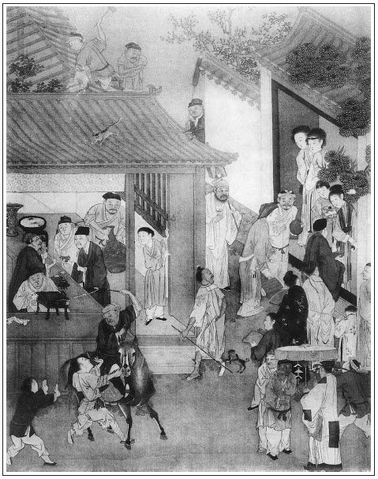

張回夫一回「熱結」之假，「冷遇」之真，直貫至一百回內。而假父子則已處處點明。桂姐之於月娘，銀姐之於瓶兒，三官之於西門，西門之於蔡京是也。真父子，則磨鏡之老人，李安之老母等類。至於假夫婦，滿部皆是，並未有一真者。有自己之妻而為人所奪，且其妻莫不情願隨人，是雖真而實假也。有他人之妻而己佔之，是以假為真，乃假中之愈假者也。故此處一寫假弟妹，結上文如許之假夫妻；一寫真夫妻，結上文如許之假弟妹。總之，為假夫妻結穴，見「色」字之空，淫慾之假。覺「東門」之葉無此慨惻也。
看他下「葛」字，便有正大光明，三媒六聘，全無一點苟合之意，所為真也。
總之「財色」二字，財是交遊，著兄弟上講，故用「冷熱」二字；色是淫慾，著夫妻上講，故用「真假」二宇，總之一樣也。
此處結黃三等一案，特為來保背主之罪下一審語，非有別也。
伯爵於此回文內，結其死者，蓋至吳典恩、楊光彥，則十兄弟「熱結」之文已完。下文雲理守，乃借雲以收月娘，非猶是「熱結」文字。故此處以伯爵死即結煞「熱結」之文矣。然則假弟妹，蓋又結十兄弟也。總之。此回已完。下文另出愛姐，以勸假夫妻中之少有良心者。另出二搗鬼，以勸親兄弟中之全無良心者，作第二番結束，以示叮嚀告戒之意，實則此回已結完也。
詞曰：
追悔當初辜深願，經年價，兩成幽怨。任越水吳山，似屏如障堪遊玩，奈獨自慵抬眼。
賞煙花，聽絃管，徒歡娛，轉加腸斷。總時轉丹青，強拈書信頻頻看，又曾似親眼見。

話說陳敬濟，到於守備府中，下了馬，張勝先進去稟報春梅。春梅分付，教他在外邊班直房內，用香湯沐浴了身體，後邊使養娘包出一套新衣服靴帽來，與他更換了。然後稟了春梅。那時守備還未退廳，春梅請敬濟到後堂，盛妝打扮，出來相見。
這敬濟進門就望春梅拜了四雙八拜，讓姐姐受禮。張夾比見玉樓何如？那春梅受了半禮，對面坐下。敘了寒溫離別之情，彼此皆眼中垂淚。張夾真正史筆。春梅恐怕守備退廳進來，見無人在根前，使眼色與敬濟，繡旁絕妙關目。張夾真正史筆。悄悄說：「等住回他若問你，只說是姑表兄弟。我大你一歲，二十五歲了，四月廿五日午時生的。」張夾表明向日未得時，不曾知得生日。敬濟道：「我知道了。」不一時，丫鬟拿上茶來，兩人吃了茶，春梅便問：「你一向怎麼出了家做了道士？守備不知是我的親，錯打了你，悔的要不的。若不是那時就留下你，爭奈有雪娥那賤人在這裡，不好安插你的。繡眉賣雪娥心事，到此方說出，豈淺人所知。張夾點出。所以放你去了。落後打發了那賤人，才使張勝到處尋你不著，誰知你在城外做工，流落至此地位。」敬濟道：「不瞞姐姐說，一言難盡。自從與你相別，要娶六姐，張夾必竟從他發源。我父親死在東京，來遲了，不曾娶成，被武松殺了。聞得你好心，葬埋了他永福寺，我也到那裡燒紙來。落後又把俺娘沒了，剛打發喪事出去，被人坑陷了資本。繡眉感恩積恨俱可言，獨有孟玉樓事說不出矣。來家又是大姐死了，被俺丈母那淫婦告了一狀，繡旁口角，妙。床帳妝奩，都搬的去了。打了一場官司，將房兒賣了，弄的我一貧如洗。多虧了俺爹朋友王杏庵周濟，把我才送到臨清晏公廟那裡出家。不料又被光棍打了，拴到咱府中。自從咱府中出去，投親不理，投友不顧，因此在寺內傭工。多虧姐姐掛心，使張管家尋將我來，得見姐姐一面，猶如再世為人了。」繡旁慘然。說到傷心處，兩個都哭了。張夾一句抹過前文。
正說話中間，只見守備退廳，左右掀開簾子，守備進來。這陳敬濟向前，倒身下拜。慌的守備答禮相還，說：「向日不知是賢弟，被下人隱瞞，誤有衝撞，賢弟休怪。」敬濟道：「不才有話，一向缺禮，有失親近，望乞恕罪。」又磕下頭去。守備一手扯起，讓他上坐。敬濟乖覺，那裡肯，務要拉下椅兒旁邊坐了。守備關席，春梅陪他對坐下。須臾，換茶上來。吃畢，守備便問：「賢弟貴庚？一向怎的不見？如何出家？」敬濟使告說：「小弟虛度二十四歲。俺姐姐長我一歲，是四月二十五日午時生。向因父母雙亡，家業凋喪，妻又沒了，出家在晏公廟。不知家姐嫁在府中，有失探望。」守備道：「自從賢弟那日去後，你令姐晝夜憂心，常時啾啾唧唧，不安直到如今。繡眉春梅一段相思，守備又為說出，妙甚。張夾補出。一向使人找尋賢弟不著，不期今日相會，實乃三生有緣。」
看官聽說，若論周守備與西門慶相交，也該認得陳敬濟，原來守備為人老成正氣，舊時雖然來往，並不留心管他家閒事。就是時常宴會，皆同的是荊都監、夏提刑一班官長，並未與敬濟見面。況前日又做了道士一番，那裡還想的到西門慶家女婿？所以被他二人瞞過，張夾補出方是筆墨不漏。只認是春梅姑表兄弟。一面分付左右放桌兒，安排酒上來。須臾，擺設許多杯盤餚饌，湯飯點心，堆滿桌上，銀壺玉盞，酒泛金波。守備相陪敘話，吃至晚來，掌上燈燭方罷。守備分付家人周仁，打掃西書院乾淨，那裡床帳都有。春梅拿出兩床鋪蓋衾枕，與他安歇。又撥了一個小廝喜兒答應他。又包出兩套綢絹衣服來，與他更換。每日飯食，春梅請進後邊吃。
正是：
一朝時運至，半點不由人。
光陰迅速，日月如梭，但見：
行見梅花臘底，忽逢元旦新正。
不覺艷杏盈枝，又早新荷貼水。
敬濟在守備府裡，住了個月有餘。一日是四月二十五日，春梅的生日。吳月娘那邊買了禮來，一盤壽桃，一盤壽麵，兩隻湯鵝，四隻鮮雞，兩盤果品，一壇南酒。玳安穿青衣拿帖兒送來。守備正在廳上坐的，門上人稟報，抬進禮來。玳安遞上帖兒，扒在地下磕頭。守備看了禮帖兒，說道：「多承你奶奶費心，又送禮來。」一面分付家人：「收進禮去，討茶來與大官兒吃。把禮帖教小伴當送與你舅收了。封了一方手帕、三錢銀子與大官兒，抬盒人錢一百文，拿回帖兒，多上覆。」說畢，守備穿了衣服，就起身拜人去了。玳安只顧在廳前伺候，討回帖兒。只見一個年少的，戴著瓦楞帽兒，穿著青紗道袍，涼鞋淨襪，從角門裡走出來，手中拿著帖兒賞錢，遞與小伴當，一直往後邊去了。「可霎作怪，模樣倒好相陳姐夫一般。他如何卻在這裡？」只見小伴當遞與玳安手帕銀錢，打發出門。
到於家中，回月娘話。見回帖上寫著「周門龐氏斂衽拜」。月娘便問：「你沒見你姐？」玳安道：「姐姐倒沒見，倒見姐夫來。」張夾與對王婆一言相照。月娘笑道：「怪囚，你家倒有恁大姐夫！張夾丑絕。守備好大年紀，你也叫他姐夫。」玳安道：「不是守備，是咱家的陳姐夫。我初進去，周爺正在廳上，我遞上帖兒與他磕了頭，他說：『又生受你奶奶送重禮來。』分付伴當拿茶與我吃，『把帖兒拿與你舅收了，討一方手帕、三錢銀子與大官兒，抬盒人是一百文錢。』說畢，周爺穿衣服出來，上馬拜人去了。半日，只見他打角門裡出來，遞與伴當回帖賞賜，他就進後邊去了，我就押著盒擔出來。不是他卻是誰？」月娘道：「怪小囚兒，休胡說白道的。那羔子知道流落在那裡討吃？不是凍死，就是餓死，張夾月娘自己如此，安怪吳典恩！文旁月娘亦曾受敬濟恩情來？亦曾借敬濟百金來？亦曾因敬濟得官來？私物，西門慶作主，月娘為從。敬濟之戲孝哥是應當的，敬濟之死大姐是應當的，比擬不類，也要批書。他平白在那府裡做甚麼？守備認的他甚麼毛片兒，肯招攬下他？」玳安道：「奶奶敢和我兩個賭，我看得千真萬真，就燒的成灰骨兒我也認的。」月娘道：「他穿著甚麼？」玳安道：「他戴著新瓦楞帽兒，金簪子。身穿著青紗道袍，涼鞋淨襪。吃的好了。」月娘道：「我不信，不信。」繡眉月娘一味小量人，小量至敬濟，可謂萬萬無失，而猶不然，則人苟一日不死，安可以賢愚貴賤小量之哉！這裡說話不題。
卻說陳敬濟進入後邊，春梅還在房中鏡台前搽臉，描畫雙蛾。敬濟拿吳月娘禮帖兒與他看。因問：「他家如何送禮來與你？是那裡緣故？」這春梅便把清明郊外，永福寺撞遇月娘相見的話，訴說一遍。後來怎生平安兒偷瞭解當鋪頭面，吳巡簡怎生夾打平安兒，追問月娘姦情之事，薛嫂又怎生說人情，守備替他處斷了事，落後他家買禮來相謝。正月裡，我往他家與孝哥兒做生日，勾搭連環到如今。他許下我生日買禮來看我一節，說了一遍。敬濟聽了，把眼瞅了春梅一眼，張夾活跳。說：「姐姐，你好沒志氣。想著這賊淫婦那咱，把咱姐兒們生生的拆散開了，張夾不知正是志氣。文旁這是志氣？從此，姦情條例可以刪卻矣。真是不通。又把六姐命喪了，永世千年，門裡門外不相逢才好，反替他去說人情兒。那怕那吳典恩拷打玳安小廝，供出姦情來，隨他那淫婦一條繩子拴去，出醜見官，管咱每大腿事？他沒和玳安小廝有奸，怎的把丫頭小玉配與他？繡旁仇口硬判，酷肖。張夾寫出仇恨。有我早在這裡，我斷不教你替他說人情。他是你我仇人，又和他上門往來做甚麼？『六月連陰──想他好情兒』！」繡眉春梅自厚，敬濟自薄。然春梅出谷遷喬，富貴緣此而起，故易厚；敬濟流離，甘苦備嘗之矣，自不得不追恨而薄矣。幾句話，說得春梅閉口無言。這春梅道：「過往勾當，也罷了，還是我心好，不念舊仇。」敬濟道：「如今人好心不得這報哩。」春梅道：「他既送了禮，莫不白受他的？他還等著我這裡人請他去哩。」敬濟道：「今後不消理那淫婦了，又請他怎的？」春梅道：「不請他又不好意思的。丟個帖兒與他，來不來隨他就是了。他若來時，你在那邊書院內，休出來見他，往後咱不招惹他就是了。」敬濟惱的一聲兒不言語，走到前邊，寫了帖兒。春梅使家人周義去請吳月娘。月娘打扮出門，教奶子如意兒抱著孝哥兒，坐著一頂小轎，張夾映春梅大轎。玳安跟隨，來到府中。春梅、孫二娘都打扮出來，迎接至後廳相見，敘禮坐下。如意兒抱著孝哥兒，相見磕頭畢。敬濟躲在那邊書院內，不走出來，由著春梅、孫二娘在後廳擺茶安席遞酒。叫了兩個妓女韓玉釧、鄭嬌兒張夾冷結金釧、月兒。言下有物是人非之感。彈唱，俱不必細說。
玳安在前邊廂房內管待。只見一個小伴當，打後邊拿著一盤湯飯點心下飯，往西角門書院中走。玳安便問他拿與誰吃，小伴當說：「是與舅吃的。」玳安道：「你舅姓甚麼？」小伴當道：「姓陳。」這玳安賊，悄悄後邊跟著他到西書院。小伴當便掀簾子進去，放卓兒吃。這玳安悄悄走出外來，依舊坐在廂房內。直待天晚，家中燈籠來接，吳月娘轎子起身。到家，一五一十告訴月娘說：「果然陳姐夫在他家居住。」自從春梅這邊被敬濟把攔，兩家都不相往還。張夾一語煞住。正是：
誰知豎子多間阻，一念翻成怨恨媒。
敬濟在府中與春梅暗地勾搭，人都不知。或守備不在，春梅就和敬濟在房中吃飯吃酒，閒時下棋調笑，無所不至。守備在家，便使丫頭小廝拿飯往書院與他吃。或白日裡，春梅也常往書院內，和他坐半日，方歸後邊來。彼此情熱，俱不必細說。
一日，守備領人馬出巡，正值五月端午佳節。張夾出愛姐矣。春梅在西書院花亭上置了一卓酒席，和孫二娘、陳敬濟吃雄黃酒，解粽歡娛。繡眉便是親姑表兄妹，亦不宜入幕同飲如此。丫鬟侍妾都兩邊侍奉。春梅令海棠、月桂兩個侍妾在席前彈唱。當下直吃到炎光西墜、微雨生涼的時分。春梅拿起大金荷花杯來相勸。酒過數巡，孫二娘不勝酒力，起身先往後邊房中看去了。獨落下春梅和敬濟在花亭上吃酒，猜枚行令，你一杯，我一杯。不一時，丫鬟掌上紗燈來，養娘金匱、玉堂打發金哥兒睡去了。敬濟輸了，便走入書房內躲酒不出來。這春梅先使海棠來請，見敬濟不去，又使月桂來，分付：「他不來，你好歹與我拉將來。拉不將來，回來把你這賤人打十個嘴巴。」這月桂走至西書房中，推開門，見敬濟𢱉在床上，推打鼾睡，不動。月桂說：「奶奶叫我來請你老人家，請不去，要打我哩。」那敬濟口裡喃喃吶吶說：「打你不幹我事。繡旁無情人語。我醉了，吃不的了。」被月桂用手拉將起來，推著他：「我好歹拉你去，拉不將你去，也不算好漢。」推拉的敬濟急了，黑影子裡佯裝著醉，作耍當真，摟了月桂在懷裡就親個嘴。那月桂亦發上頭上腦說：「人好意叫你，你做大不正，倒做這個營生。」敬濟道：「我的兒，你若肯了，那個好意做大不成？」又按著親了個嘴，方走到花亭上。張夾寫諸婢總為守備不知作地。月桂道：「奶奶要打我，還是我把舅拉將來了。」春梅令海棠斟上大鐘，兩個下盤棋，賭酒為樂。當下你一盤，我一盤，熬的丫鬟都打睡去了。春梅又使月桂、海棠後邊取茶去，兩個在花亭上，解佩露相如之玉，朱唇點漢署之香。
正是：
得多少花陰曲檻燈斜照，旁有墜釵雙鳳翹。
有詩為證：
花亭歡洽鬢雲斜，粉汗凝香沁絳紗。
深院日長人不到，試看黃鳥啄名花。
兩個正幹得好，忽然丫鬟海棠送茶來：「請奶奶後邊去，金哥睡醒了，哭著尋奶奶哩。」春梅陪敬濟又吃了兩鍾酒，用茶嗽了口，然後抽身往後邊來。丫鬟收拾了家活，喜兒扶敬濟歸書房寢歇，不在話下。
一日，朝廷敕旨下來，命守備領本部人馬，會同濟州府知府張叔夜，征剿梁山泊賊王宋江，早晚起身。守備對春梅說：「你在家看好哥兒，叫媒人替你兄弟尋上一門親事。我帶他個名字在軍門，若早僥倖得功，朝廷恩典，升他一官半職，於你面上，也有光輝。」繡眉為老婆面上用情，人人都肯。這春梅應諾了。遲了兩三日，守備打點行裝，整率人馬，留下張勝、李安看家，止帶家人周仁跟了去。不題。
一日，春梅叫將薛嫂兒來，如此這般和他說：「他爺臨去分付，叫你替我兄弟尋門親事，你須尋個門當戶對好女兒，不拘十六七歲的也罷，只要好模樣兒，聰明伶俐些的。他性兒也有些厥劣。」薛嫂兒道：「我不知道他也怎的？不消你老人家分付。想著大姐那等的還嫌哩。」春梅道：「若是尋的不好，看我打你耳刮子不打？我要趕著他叫小妗子兒哩，休要當耍子兒。」說畢，春梅令丫鬟擺茶與他吃。只見陳敬濟進來吃飯。薛嫂向他道了萬福，說：「姑夫，你老人家一向不見，在那裡來？且喜呀，剛剛奶奶分付，交我替你老人家尋個好娘子，你怎麼謝我？」那陳敬濟把臉兒迸著不言語。繡眉居移體，養移氣，便看得自家大矣。薛嫂道：「老花子怎的不言語？」春梅道：「你休要叫他姑夫，那個已是揭過去的帳了，你只叫他陳舅就是了。」薛嫂道：「真該打，我這片子狗嘴，只要叫錯了，往後趕著你只叫舅爺罷。」那敬濟忍不住，撲吃的笑了，說道：「這個才可到我心上。」繡眉寫三人語默嬉笑，宛如聞聲見色。那薛嫂撒風撒癡，趕著打了他一下，說道：「你看老花子說的好話兒，我又不是你影射的，怎麼可在你心上？」連春梅也笑了。
不一時，月桂安排茶食與薛嫂吃了，說道：「我替你老人家用心踏著，有人家相應好女子兒，就來說。」春梅道：「財禮羹果，花紅酒禮，頭面衣服，不少他的，只要好人家好女孩兒，方可進入我門來。」薛嫂道：「我曉得，管情應的你老人家心便了。」良久，敬濟吃了飯，往前邊去了。薛嫂兒還坐著，問春梅：「他老人家幾時來的？」春梅便把出家做道士一節說了：「我尋得他來，做我個親人兒。」薛嫂道：「好好，你老人家有後眼。」又道：「前日你老人家好日子，說那頭他大娘來做生日來？」春梅道：「他先送禮來，我才使人請他，坐了一日去了。」薛嫂道：「我那日在一個人家鋪床，整亂了一日。心內要來，急的我要不的。」又問：「他陳舅，也見他那頭大娘來？」春梅道：「他肯下氣見他？為請他，好不和我亂成一塊。嗔我替他家說人情，說我沒志氣。『那怕吳典恩打著小廝，攀扯他出官才好，管你腿事？你替他尋分上，想著他昔日好情兒？』」薛嫂道：「他老人家也說的是，及到其間，也不計舊仇罷了。」春梅道：「咱既受了他禮，不請他來坐坐兒，又使不的。寧可教他不仁，休要咱不義。」薛嫂道：「怪不的你老人家有恁大福，你的心忒好了！」繡眉薛嫂數語不抹殺敬濟，又勸慰春梅，暗暗與月娘銷怨。使君言之不過如此，安可以媒人嘴薄之？當下薛嫂兒說了半日話，提著花箱兒，拜辭出門。
過了兩日，先來說：「城裡朱千戶家小姐，今年十五歲，也好陪嫁，只是沒了娘的兒了。」春梅嫌小不要。又說應伯爵第二個女兒，年二十二歲。春梅又嫌應伯爵死了，繡旁忽完冷案，妙。張夾結。在大爺手內聘嫁，沒甚陪送，也不成。都回出婚帖兒來。又遲了幾日，薛嫂兒送花兒來，袖中取出個婚帖兒，大紅段子上寫著：開段鋪葛員外家大女兒，年二十歲，屬雞的，十一月十五日子時生，小字翠屏。「生的上畫兒般模樣兒，五短身材，瓜子面皮，溫柔典雅，聰明伶俐，針指女工，自不必說。父母俱在，有萬貫錢財。在大街上開段子鋪，走蘇杭、南京，無比好人家。陪嫁都是南京床帳箱籠。」春梅道：「既是好，成了這家的罷。」就交薛嫂兒先通信去。那薛嫂兒連忙說去了。
正是：
欲向繡房求艷質，須憑紅葉是良媒。
有詩為證：
天仙機上系香羅，千里姻緣竟足多。
天上牛郎配織女，人間才子伴嬌娥。
這裡薛嫂通了信來，葛員外家知是守備府裡，情願做親，又使一個張媒人同說媒。春梅這裡備了兩抬茶葉、糧糖、羹果，教孫二娘坐轎子，往葛員外家插定女兒。回來對春梅說：「果然好個女子，生的一表人才，如花似朵，人家又相當。」春梅這裡擇定吉日，納採行禮。十六盤羹果茶餅，兩盤頭面，二盤珠翠，四抬酒，兩牽羊，一頂䯼髻，全付金銀頭面簪環之類。兩件羅段袍兒，四季衣服。其餘綿花布絹，二十兩禮銀，不必細說。陰陽生擇在六月初八日，准娶過門。春梅先問薛嫂兒：「他家那裡有陪床使女沒有？」薛嫂兒道：「床帳妝奩都有，只沒有使女陪床。」春梅道：「咱這裡買一個十三四歲丫頭子，與他房裡使喚，掇桶子倒水方便些。」薛嫂道：「有，我明日帶一個來。」
到次日，果然領了一個丫頭，說：「是商人黃四家兒子房裡使的丫頭，今年才十三歲。黃四因用下官錢糧，和李三還有咱家出去的保官兒，都為錢糧捉拿在監裡追贓，監了一年多，張夾總結。家產盡絕，房兒也賣了。李三先死，拿兒子李活監著。咱家保官兒那兒僧寶兒，如今流落在外，與人家跟馬哩。」繡眉李三、黃四，瓦罐不離井上破；來保背主盜財，皆人事天理所必敗者。故節上生枝，詳完此案。知此則知《金瓶梅》非淫書也。張夾全結。春梅道：「是來保？」薛嫂道：「他如今不叫來保，改了名字叫湯保了。」春梅道：「這丫頭是黃四家丫頭，要多少銀子？」薛嫂道：「只要四兩半銀子。緊等著要交贓去。」春梅道：「甚麼四兩半，與他三兩五錢銀子留下罷。」一面就交了三兩五錢雪花官銀與他，寫了文書。改了名字，喚做金錢兒。張夾因錢至此。
話休饒舌，又早到六月初八。春梅打扮珠翠鳳冠，穿通袖大紅袍兒，束金鑲碧玉帶。坐四人大轎，鼓樂燈籠，娶葛家女子，奠雁過門。陳敬濟騎大白馬，揀銀鞍轡，青衣軍牢喝道。頭戴儒巾，穿著青段圓領，腳下粉底皂靴，頭上簪著兩支金花。
正是：
久旱逢甘雨，他鄉遇故知。洞房花燭夜，金榜掛名時。
一番拆洗一番新。到守備府中，新人轎子落下。頭蓋大紅銷金蓋袱，添妝含飯，抱著寶瓶進入大門。陰陽生引入畫堂，先參拜了堂，然後歸到洞房。繡眉敬濟一少年，不經事妄人也。一流落便當該死，乃從冷鋪傭奴中忽又有一番富貴，人生信乎有命矣。春梅安他兩口兒坐帳，然後出來。陰陽生撒帳畢，打發喜錢出門，鼓手都散了。敬濟與這葛翠屏小姐坐了回帳，騎馬打燈籠，往岳丈家謝親。吃的大醉而歸。晚夕女貌郎才，未免燕爾新婚，交姤雲雨。正是：得多少──
春點杏桃紅綻蕊，風欺楊柳綠翻腰。
當夜敬濟與這葛翠屏小姐倒且是合得著。兩個被底鴛鴦，帳中鸞鳳，如魚似水，合巹歡娛。三日完飯，春梅在府廳後堂張筵掛采，鼓樂笙歌，請親眷吃會親酒，俱不必細說。每日春梅吃飯，必請他兩口兒同在房中一處吃。彼此以姑妗稱之，同起同坐。丫頭養娘、家人媳婦，誰敢道個不字？原來春梅收拾西廂房三間，與他做房，裡面鋪著床帳，糊的雪洞般齊整，垂著簾幃。外邊西書院，是他書房。裡面亦有床榻、幾席、古書，張夾即後死所。並守備往來書柬拜帖，並各處遞來手本揭帖，都打他手裡過。春梅不時常出來書院中，和他閒坐說話，兩個暗地交情。正是：
朝陪金谷宴，暮伴綺樓娃。
休道歡娛處，流光逐落霞。
文回文禹門云: 此書以《金瓶梅》命名，蓋取三個淫婦人之名以成此書。是三人者，名既平列，固德無高下，品無軒輊，而其淫則一也。不過福有厚薄，壽有修短耳。閱者往往重視春梅，褒多貶少，是亦從炎涼勢利起見，又何責乎吳月娘一人也。
至此一回，金、瓶均已收結，故放筆寫春梅之不畏人言，不慮物議，不顧羞恥，不為其夫其子留臉面，其淫亂故不在金，瓶二人之下，尚得謂之有志氣哉！陳敬濟一無知、無能、無行、無品之惡少年，為人世之所不容，為親友之所不齒，侯林兒亦不過取其下體耳。春梅乃念茲在茲而尋之，三薰三沐而進之，亦無非采葑采菲，金宗明據其後，龐春梅攘其前；迨至已為之娶妻，而猶食人之唾餘，其後卒死於周義身上，其淫視金、瓶何如哉！故金之淫以蕩，瓶之淫以柔，梅之淫以縱。嬌兒不能入其黨，玉樓亦不可入其黨，雪娥不配入其黨。此三人故淫婦中之翹楚者也，李瓶兒死於色昏，潘金蓮死於色殺，龐春梅死於色脫。好色者其鑒諸！貪淫者其鑒諸！